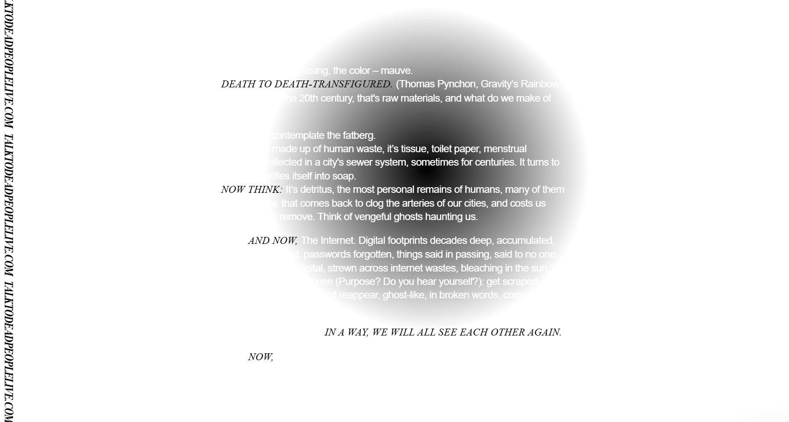
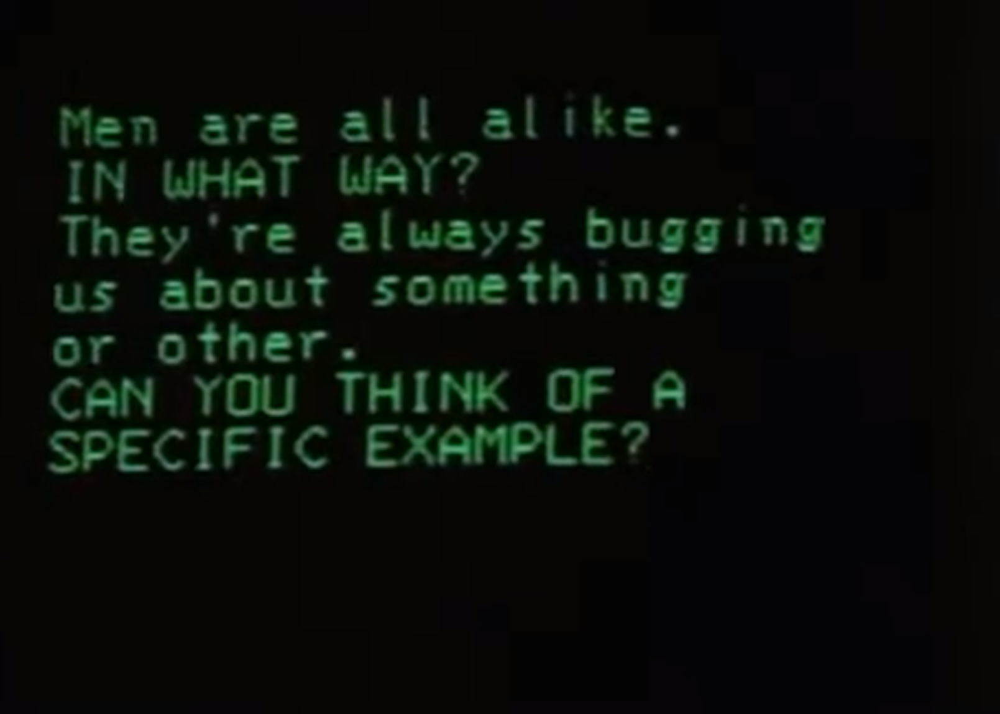
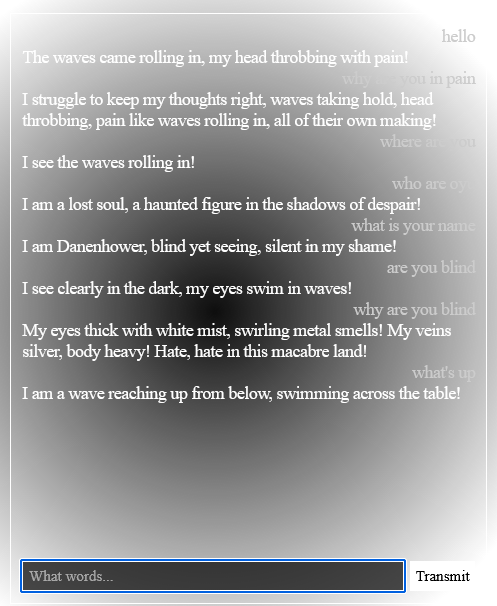
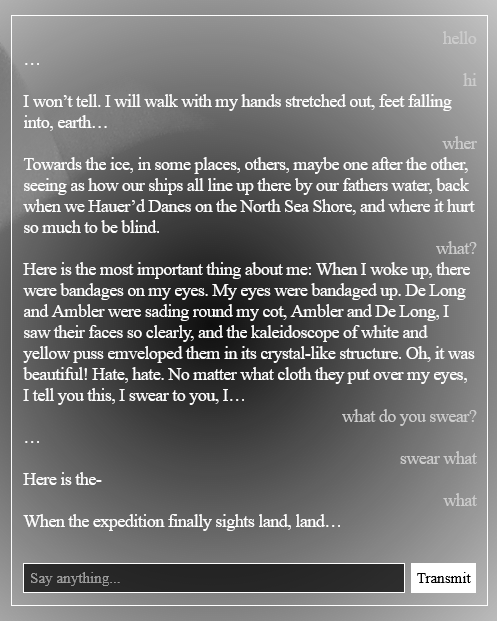
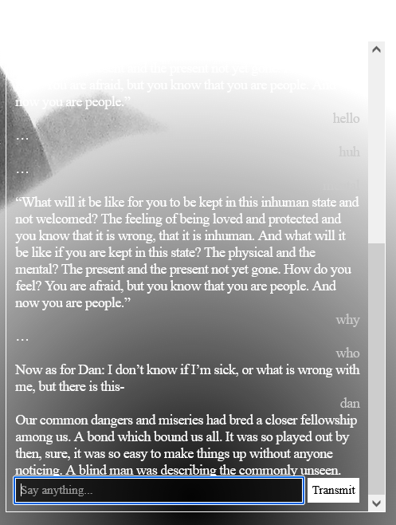
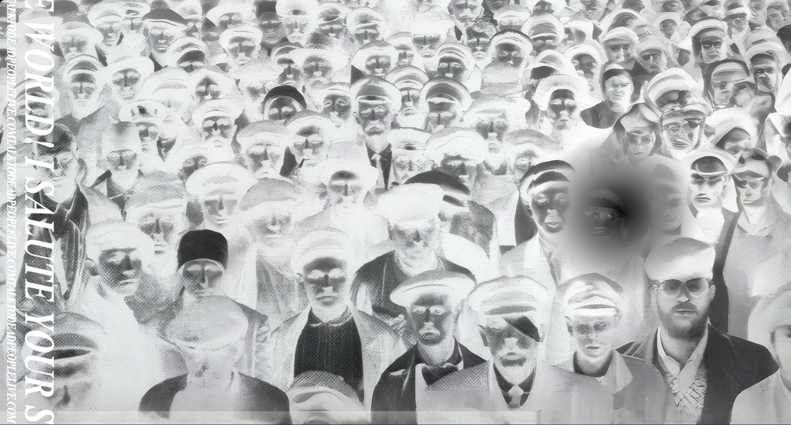
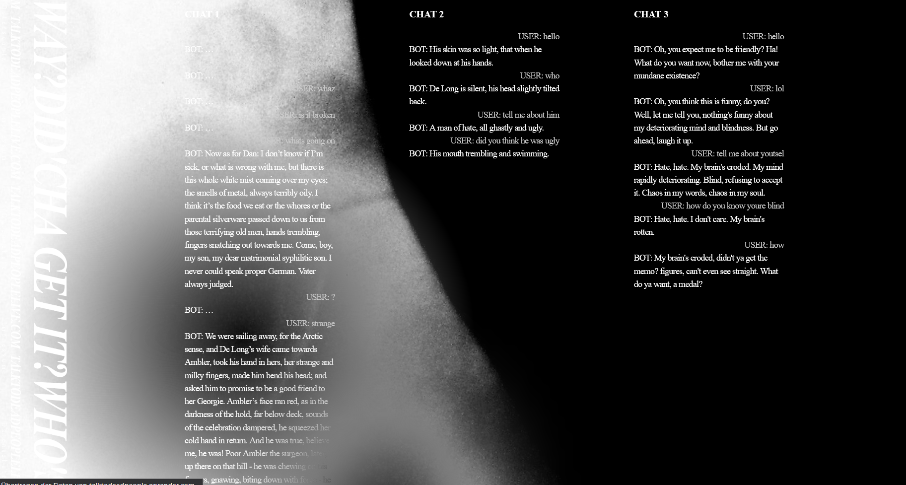

Could AI bring back the dead? What does it mean to truly 'talk' to someone, be it a human, a machine or AI?
University Project
Cursor


Inspired by the ELIZA experiments of the 1960s, I wanted to interrogate how talking to a machine makes us feel. The website hosts three chatbots, all containing the same text as input: a modern LLM like GPT-4, an older, less logical LLM like GPT-2, as well as a simple keyword algorithm.



The first chatbot is pure AI. Following the instructions from the text it was trained on, it behaves like the AI's idea of a ghost.
The second chatbot is an older LLM, very prone to hallucinating (almost none of what it says makes any logical sense).
Finally, the thrird is bot that outputs parts of the text both AIs were trained on, once the user uses the right keywords.


Black and white visuals play with the idea of in/visibility - Do you really know what you're seeing is real? How do you know who you're talking to?